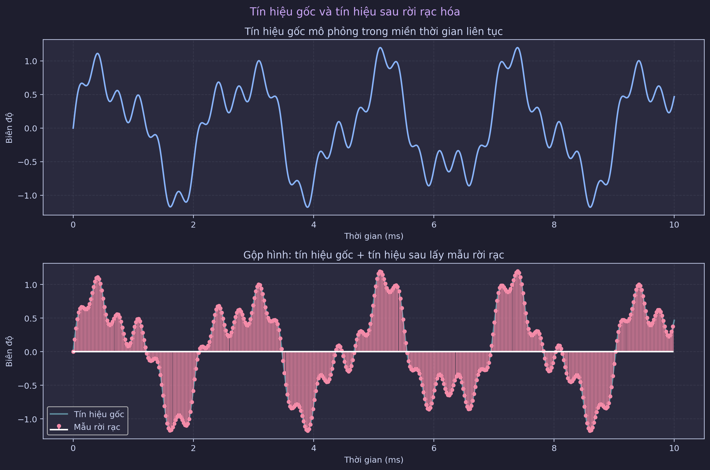
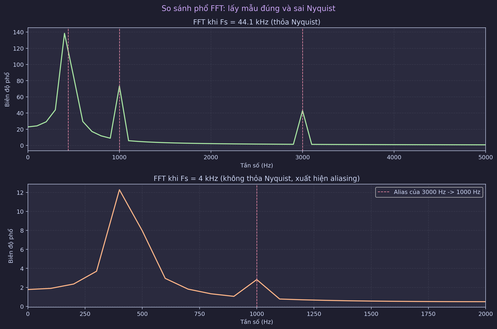
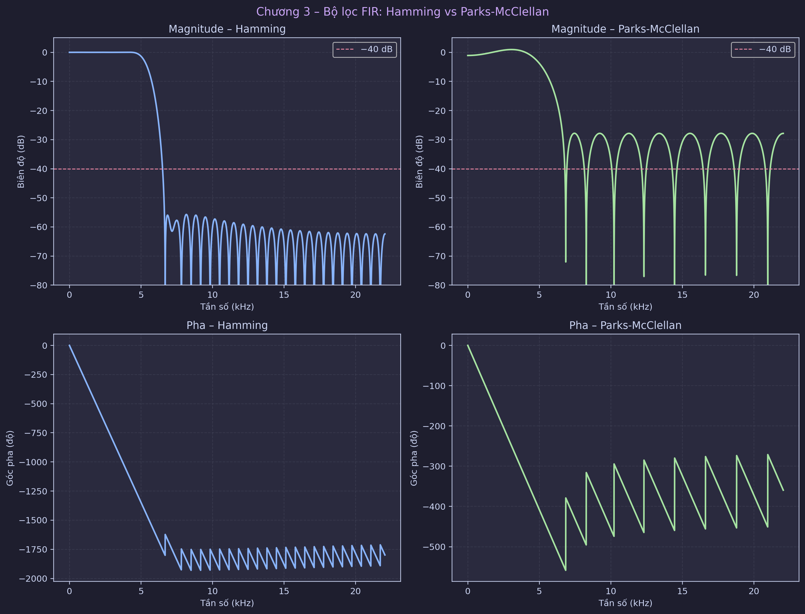
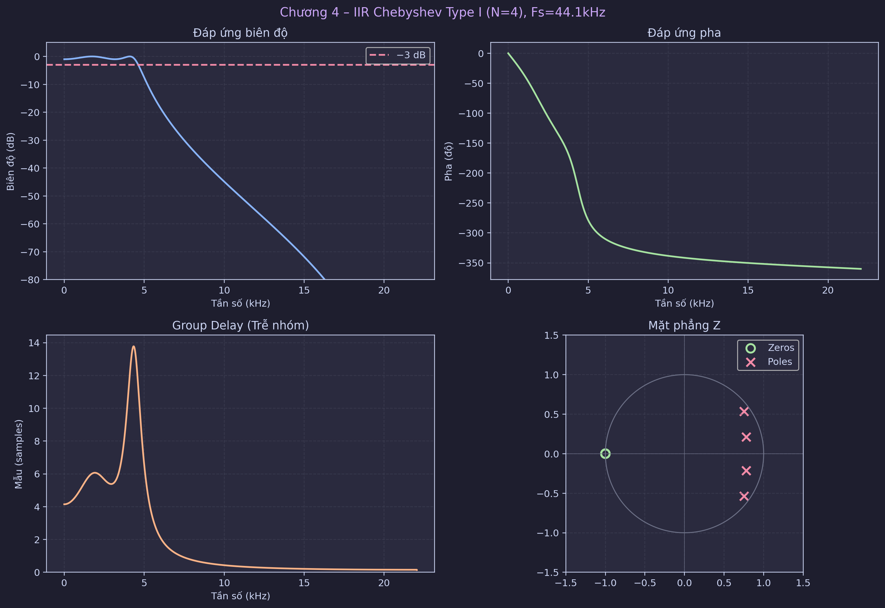
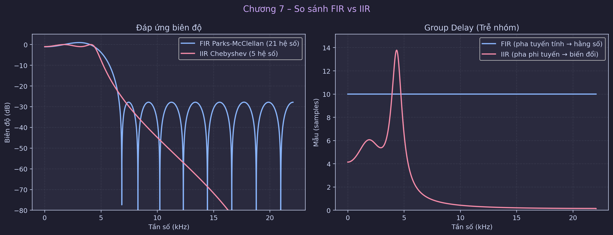
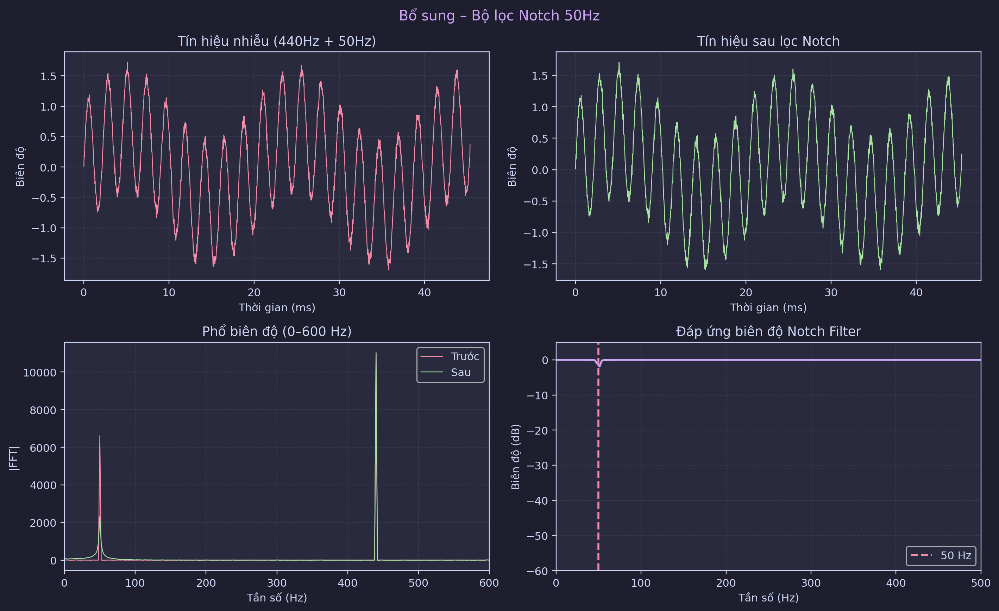
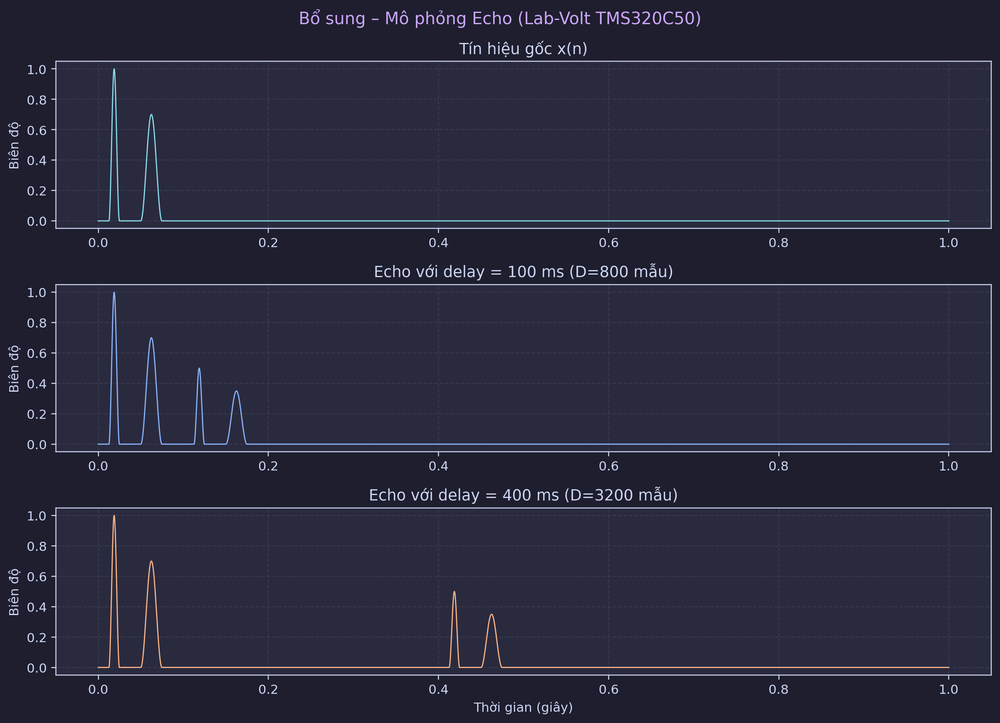

Đơn vị: Trường Đại học Bách Khoa Hà Nội – Viện Điện tử Viễn thông
Sinh viên: Đồng Thiên Trang – MSSV 20102350
Môn học: Xử lý số tín hiệu (DSP)
Ngày cập nhật: 20/03/2026
Báo cáo hợp nhất này tổng hợp đầy đủ ba phiên bản trước theo một cấu trúc khoa học xuyên suốt từ lý thuyết đến triển khai. Nội dung tập trung vào thiết kế bộ lọc số FIR/IIR cho tín hiệu âm thanh, mô phỏng quá trình rời rạc hóa theo định lý Nyquist–Shannon, đánh giá hiện tượng aliasing, so sánh hiệu năng FIR và IIR, và kiểm chứng ứng dụng thực tế với bộ lọc notch 50 Hz và hiệu ứng echo.
Về mặt phương pháp, phần FIR được triển khai theo hai hướng: cửa sổ Hamming và Parks-McClellan (equiripple), còn phần IIR dùng Chebyshev Type I kết hợp tư duy bilinear/pre-warp. Về mặt kỹ thuật phần mềm, chương trình đã được mô-đun hóa hoàn chỉnh bằng Python/SciPy/Matplotlib, hỗ trợ chạy tương tác, chạy headless và tự động xuất toàn bộ hình vào imgaes/v3/ phục vụ báo cáo.
Kết quả cho thấy: (i) điều kiện Nyquist được thỏa với $F_s=44.1$ kHz cho tín hiệu có $f_{max}=3$ kHz; (ii) khi vi phạm Nyquist (ví dụ $F_s=4$ kHz), thành phần 3 kHz bị alias về 1 kHz; (iii) IIR đạt bậc thấp hơn đáng kể so với FIR nhưng đánh đổi pha phi tuyến; (iv) notch 50 Hz cải thiện SNR rõ rệt, từ khoảng 4.37 dB lên 11.33 dB.
Sự chuyển dịch từ hệ analog sang hệ số trong xử lý âm thanh mang lại ba lợi thế chính: độ lặp lại cao, tính linh hoạt thuật toán, và khả năng tối ưu hóa trên phần cứng DSP. Trong bối cảnh này, hai lớp bộ lọc chủ đạo là FIR và IIR luôn đóng vai trò trung tâm.
Liên hệ phần cứng thực nghiệm: TMS320C50 (fixed-point DSP) và hệ Lab-Volt DSP cho thấy các quyết định thiết kế bộ lọc không chỉ mang tính học thuật mà còn tác động trực tiếp đến tài nguyên phần cứng thời gian thực.
Mô hình tổng quát của hệ tuyến tính bất biến theo thời gian:
$$ y(n)=\sum_{i=0}^{M} b_i x(n-i)-\sum_{j=1}^{N} a_j y(n-j) $$
Năng lượng tín hiệu:
$$ E_x=\sum_n |x(n)|^2 $$
Hàm truyền đạt:
$$ H(z)=\frac{B(z)}{A(z)} $$
Điều kiện ổn định BIBO của hệ rời rạc nhân quả: mọi pole phải nằm trong vòng tròn đơn vị, tức $|p_k|<1$.
Trong thiết kế IIR dựa trên analog prototype:
$$ \Omega=\frac{2}{T}\tan\left(\frac{\omega}{2}\right) $$
Công thức này dùng để pre-warp tần số trước khi ánh xạ bilinear, giúp giữ đúng điểm cắt mục tiêu trong miền số.
Thông số thiết kế:
Đổi sang tần số vật lý:
$$ f_p=\frac{\omega_pF_s}{2\pi}=4410\ \text{Hz} $$
$$ f_s=\frac{\omega_sF_s}{2\pi}=6615\ \text{Hz} $$
Tín hiệu gốc mô phỏng gồm 3 thành phần: 440 Hz, 1000 Hz, 3000 Hz.
Rời rạc hóa theo:
$$ x[n]=x(nT_s),\quad T_s=\frac{1}{F_s} $$
Hình minh họa:

Với $f_{max}=3000$ Hz, điều kiện Nyquist yêu cầu:
$$ F_s\ge 2f_{max}=6000\ \text{Hz} $$
Do $F_s=44100$ Hz nên điều kiện được thỏa.
Phản ví dụ với $F_s=4000$ Hz cho thấy thành phần 3000 Hz alias về 1000 Hz.
Hình FFT so sánh:

Bậc ước lượng:
$$ M=\left\lceil\frac{6.6\pi}{\Delta\omega}\right\rceil $$
Với $\Delta\omega=0.1\pi$, thu được $M=66$.
Đặc điểm:
Thiết kế bằng remez với ràng buộc ripple dải thông và suy giảm dải chắn.
Kết quả thực nghiệm cho bậc xấp xỉ 20, nhỏ hơn rõ rệt so với Hamming.
Hình so sánh:

Ràng buộc thiết kế:
cheb1ord cho bậc tối thiểu $N=4$.
Pre-warp tương ứng:
Hình đáp ứng và mặt phẳng Z:

Nhận xét:
Hình so sánh trực quan:

Bảng tóm tắt:
| Tiêu chí | FIR | IIR |
|---|---|---|
| Bậc lọc | Cao hơn | Thấp hơn |
| Pha | Tuyến tính tốt | Phi tuyến |
| Ổn định | Luôn ổn định | Cần kiểm tra pole |
| Chi phí tính toán | Lớn hơn | Nhỏ hơn |
| Ứng dụng phù hợp | Audio Hi-Fi | Hệ thống hạn chế tài nguyên |
Kết luận kỹ thuật: không có lựa chọn tuyệt đối tốt nhất; cần chọn theo tiêu chí ưu tiên giữa trung thực pha và hiệu quả tính toán.
Bài toán: tín hiệu 440 Hz bị nhiễu điện lưới 50 Hz.
Bộ lọc sử dụng: iirnotch(50 Hz, Q=30).
Hình kết quả:

SNR cải thiện:
Mô hình:
$$ y(n)=x(n)+\alpha x(n-D) $$
với các mức trễ 100/200/400 ms.
Hình mô phỏng:

modules/demo_runner.pymodules/sampling_demo.pymodules/signal_ops.pymodules/z_analysis.pymodules/fir_filters.pymodules/iir_filters.pymodules/comparison.pymodules/applications.pymodules/plot_config.pyChạy hiển thị tương tác:
python dsp_audio_filter.py
Chạy headless + lưu ảnh:
python dsp_audio_filter.py --no-plots --save-plots-dir imgaes/v3
Bản hợp nhất V1-V2-V3 đã đạt mục tiêu xây dựng một báo cáo nhất quán, khoa học và có khả năng tái lập cao. Hệ thống mô phỏng Python hiện không chỉ thay thế được phần MATLAB cốt lõi mà còn mở rộng tốt cho quy trình phân tích thực nghiệm bằng hình ảnh và chỉ số.
Hướng phát triển tiếp theo: